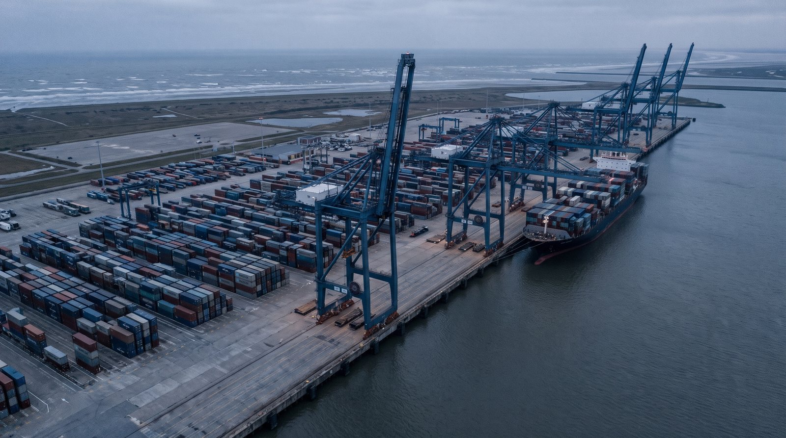
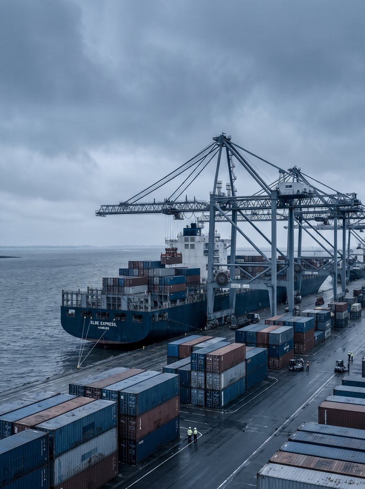
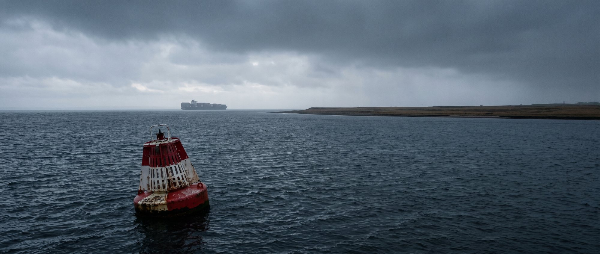
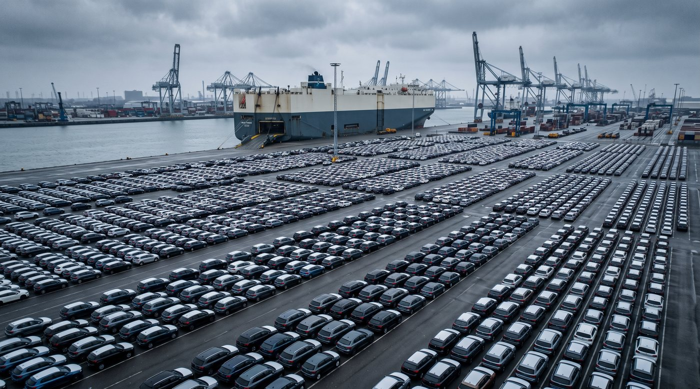

Bremerhaven, à neuf jours
Notre succursale allemande travaille la première escale européenne de la traversée. La marchandise destinée au marché allemand y débarque plutôt que de naviguer deux jours de plus vers Rotterdam et de revenir par la route.
Pourquoi ouvrir ici
Le navire passe Bremerhaven avant d’atteindre Rotterdam
Sur les services transatlantiques qui font ce corridor, Bremerhaven se situe à environ neuf jours de Halifax et Rotterdam à onze. Pour un acheteur de Brême, de Hambourg ou de la Ruhr, débarquer la boîte à l’escale allemande épargne deux jours de mer et un parcours routier de retour.
C’est tout l’argument de la succursale. Bremerhaven n’est pas un plus grand port que Rotterdam et nous ne prétendons pas le contraire, mais pour la marchandise destinée à l’Allemagne c’est le plus proche, et la déclaration se fait dans le pays où la marchandise reste.
Bremerhaven a manutentionné 5,21 millions d’EVP en 2025, ce qui en fait le quatrième port à conteneurs d’Europe.

Le port
Ce que Bremerhaven apporte
Le terminal est exploité par d’autres entreprises. Les chiffres sont les leurs, pas les nôtres.
L’emplacement
À l’embouchure de la Weser, sur la côte de la mer du Nord. Le navire quitte la haute mer et accoste sans longue remontée fluviale.
Les exploitants
North Sea Terminal Bremerhaven et MSC Gate exploitent les installations à conteneurs. NTB seul manutentionne plus de trois millions d’EVP par année.
Ce qui passe aussi
Bremerhaven est la principale porte d’exportation automobile de l’Allemagne. Pour les véhicules et la machinerie, l’expérience est déjà sur place.
Chiffres publiés par bremenports et les exploitants du terminal. Voir la page des sources.
Douane allemande
Dédouaner en Allemagne n’est pas la même opération qu’aux Pays-Bas
Les deux pays sont dans l’Union européenne, alors le tarif est identique. Ce qui change, c’est la trésorerie, et cela mérite d’être compris avant de choisir un port d’entrée.
La taxe allemande à l’importation, l’Einfuhrumsatzsteuer, est perçue à la frontière par la douane en même temps que les droits. Elle s’élève à 19 pour cent, ou 7 pour cent sur les biens à taux réduit comme les aliments et les livres. Vous la récupérez, puisqu’elle est déductible à titre de taxe sur les intrants pour la période où elle a été payée. Mais vous l’avez d’abord décaissée, et sur un conteneur de marchandise de valeur cela immobilise une somme réelle pendant quelques semaines.
Les Pays-Bas fonctionnent autrement. Une licence dite d’article 23 permet à l’importateur de porter la taxe sur sa déclaration périodique au lieu de la payer à la frontière, ce qui donne un effet net nul sur la trésorerie. Une entreprise sans établissement néerlandais doit nommer un représentant fiscal pour s’en prévaloir.
La réponse honnête est donc que cela dépend de votre marchandise et de votre bilan. Une cargaison de valeur destinée à un acheteur allemand qui peut porter la taxe quelques semaines gagne à débarquer à Bremerhaven et à économiser deux jours. Là où la trésorerie compte plus que le délai, l’entrée par Rotterdam peut mieux convenir. Nous vous dirons de quel côté penche votre envoi, et notre rémunération est la même dans les deux cas.
Ce que nous déclarons pour vous
- Système de déclaration
- ATLAS, par voie électronique
- Identifiant
- Numéro EORI
- Taxe à l’importation
- 19 %, ou 7 % réduit
- Préférence
- Déclaration d’origine sous l’AECG
ATLAS est le système électronique de déclaration de la douane allemande. Nous y déposons directement.

Embouchure de la Weser
De la haute mer au quai, sans remontée fluviale.
Depuis Bremerhaven
Où va la boîte ensuite
Le rail quitte le terminal vers la Ruhr, la Bavière, puis l’Autriche et la Tchéquie. La route couvre le nord de l’Allemagne le jour même. Pour le corridor rhénan, la barge revient d’ordinaire moins cher et plus lentement, et nous le disons plutôt que de réserver d’office l’option rapide.
- Bremerhaven vers Brême
- Le jour même
- Bremerhaven vers Hambourg
- Le jour même
- Bremerhaven vers la Ruhr
- Le lendemain
- Bremerhaven vers la Bavière
- Deux jours par rail
À titre indicatif. Nous confirmons le délai réel de votre parcours au moment de la soumission.
La marchandise de cette escale
Ce qui passe par l’escale allemande
Vers l’est, du Canada : produits de la mer pour les acheteurs allemands et autrichiens, bois et pâte, et de plus en plus d’aluminium.
Vers l’ouest, d’Allemagne : machines et machines-outils, pièces automobiles, produits chimiques et véhicules. Bremerhaven manutentionne déjà des véhicules à grande échelle.

La succursale
Des gens sur place, dans le bon fuseau horaire
La succursale existe pour qu’un importateur allemand traite avec quelqu’un qui dépose dans ATLAS tous les jours et répond au téléphone en allemand pendant les heures ouvrables allemandes.
Halifax mène le côté canadien et la réservation maritime. Bremerhaven mène la déclaration allemande et le parcours terrestre. Rotterdam reste dans le portrait pour la marchandise qui gagne à entrer par les Pays-Bas. Un seul dossier et une seule facture, quel que soit le chemin de votre boîte.